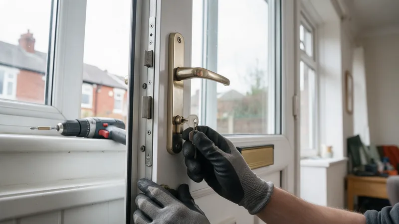
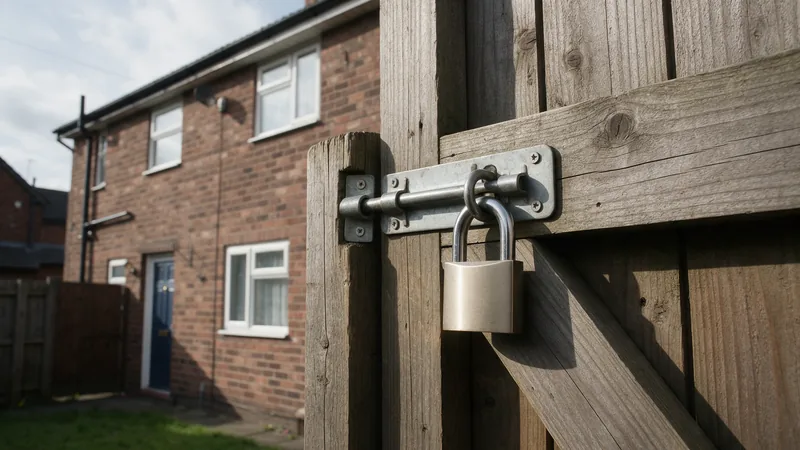
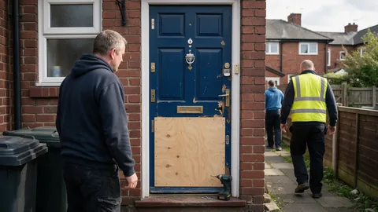

The window nobody thinks about
People spend money on the front door and leave a ground floor window that opens on a handle with nothing else holding it. It is the single most common gap we see, and it is also the cheapest one to close. An hour on the downstairs windows is the best value visit in this trade.
What goes wrong
Three things. The handle turns but nothing grips, which is the strip inside the frame rather than the handle. The handle has gone stiff or snapped, which is the handle. Or there is no lock at all, which is a fitting job rather than a repair.
On older timber windows it is different again: sash fasteners, stays and catches, most of which can be made to work rather than replaced, and some of which are worth keeping because you will not buy anything as good now.
Keys and sense
A key operated window lock only works if the key is not left in it, and does not work at all if nobody can find the key in a fire. The sensible arrangement is locked when the house is empty or everyone is in bed, keys on a hook in the room, known to everybody who sleeps there. We will say that out loud when we fit them, because a locked window with a lost key is a hazard rather than a feature.
Gates, sheds and garages while we are there
Side gates, shed hasps, garage handles and padlocks tend to be in the same state as the windows and get forgotten for the same reason. If you want them looked at in the same visit, say so when you book and we will bring something that fits rather than something we have to cut off.

Generated photoGenerated for this demo. Not a photograph of a real job.

Generated photoA side gate with a closed shackle padlock on it. The back of a house is usually the weaker half, and the cheapest half to put right.
On the day
How this one usually goes.
- Walk round the outside with youWhich windows open, which are overlooked, which back onto an alley or a garden nobody can see into.
- Try every handleHalf the job is finding out which ones already have a lock that nobody has used for years because the key went missing.
- Fix the strip, not just the handleIf the handle turns and nothing grips, the handle is not the problem. The strip inside the frame is.
- Fit, then test from outsideLocked, then given a proper pull from outside. A lock that stops the handle but not the window is not doing much.
- Keys, labelled and sensibleKeys handed over with a word about where to keep them, which matters as much as the lock in a house with children.
A sample running order for this demo. Yours depends on what is on the door.
Questions
Asked about this job.
Do window locks actually make a difference?
On a ground floor window, yes, and more than people expect for what they cost. Most opportunist entries are quiet and quick, and a window that will not open quietly gets left.
Upstairs, honestly, less so, unless there is a flat roof, an extension or a sturdy drainpipe under it. We will tell you which of yours we would bother with and which we would not.
My window handle turns but the window still opens.
Then the handle is fine and the long strip inside the frame is not gripping. It is called an espagnolette and it is a part that can be replaced.
That is a repair rather than a new window, which is worth knowing because it is the point at which some people get told the whole frame needs doing.
Is it safe to lock windows with children in the house?
It is, with one rule: everybody who sleeps in the room knows where the key is, and it is in that room. Locked windows with the key in a drawer downstairs is the arrangement that worries us.
We would rather have that conversation when we fit them than leave you to work it out.
Can you do the side gate and the shed as well?
Yes, and they usually need it more than the windows do. Gates, hasps, garage handles and padlocks all in the same visit.
Tell us roughly what is on there now when you book. It saves us turning up with the wrong size or having to cut a seized padlock off before we can start.
General trade knowledge written for this demo, not advice on your door.
Our work
Sample jobs like this.
 Generated photoWindow locks downstairsSwinton · sample
Generated photoWindow locks downstairsSwinton · sample Generated photoSafe fitted in a garageSale · sample
Generated photoSafe fitted in a garageSale · sample
Generated photoBoarded up for the nightEccles · sample Generated photoCylinders changed on moving daySwinton · sample
Generated photoCylinders changed on moving daySwinton · sampleMade up samples with generated pictures. Tap one for the detail.
Also
The other things we do.
Emergency lockouts
Shut out of your own house, keys lost or snapped off in the lock. Opened without damage wherever we can, and a straight word first if we cannot.
More →Lock changes and upgrades
New cylinders, new mortice locks, new keys. The usual reasons are moving in, losing a set, or a lock that has got stiff enough to worry you.
More →uPVC door lock and mechanism repairs
The door you have to lift and lean on to lock. Usually the gearbox, the alignment or the cylinder, and all three are a repair rather than a new door.
More →Lock repairs after a break in
Secure tonight first, then put right properly: the lock, the keeps, the frame. Boarding up where a door or window will not shut.
More →Safes and key cutting
Keys cut from a blank while you wait, and domestic safes fitted where they are actually worth having. Where it goes matters more than the safe.
More →Shall we come and look?
Tell us which door it is and your postcode and we will book someone in. If you are locked out right now, use the urgent line instead.